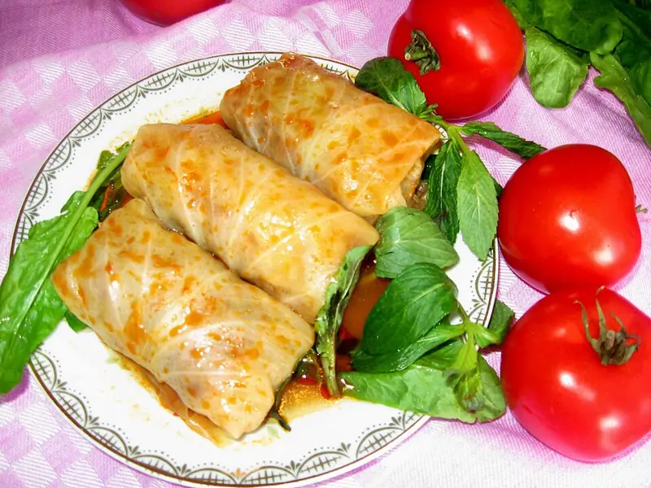

Фото: No machine-readable author provided. Irada assumed (based on, CC BY 3.0

Долма в капустных листьях
Азербайджанская долма: маленькие рулетики из баранины с рисом и зеленью в капусте
110 мин5 порц.417 ккал на порциюБ 24 · Ж 23 · У 29Кавказская кухня
Продукты на 5 порц.
- Капуста белокочанная1 шт
- Баранина500 г
- Лук репчатый2 шт
- Рис0,4 стак.
- Кинза0,5 пучка
- Укроп0,5 пучка
- Сливочное масло30 г
- Вода2 стак.
- Соль1,5 ч. л.
- Перец чёрный молотый0,5 ч. л.
- Йогурт без добавок200 г
- Чеснок1 зуб.
Как готовить
- Вырежьте кочерыжку, опустите кочан в кипящую воду на 5-7 минут и снимайте листья по мере того, как они размягчаются. Срежьте толстые прожилки, крупные листья разрежьте на 2-3 части.
- Прокрутите баранину с луком через мясорубку. Добавьте промытый сырой рис, рубленую зелень, соль и перец, хорошо вымесите.
- Положите на кусок листа 1 ст. л. фарша, подверните края и сверните плотный рулетик длиной с палец.
- Уложите долму плотно в кастрюлю швом вниз в несколько слоёв, сверху разложите кусочки масла.
- Залейте горячей водой до половины высоты, накройте тарелкой, чтобы долма не развернулась, и крышкой.
- Доведите до кипения и тушите на слабом огне 50 минут, пока капуста не станет мягкой, а рис внутри готовым.
- Для соуса смешайте йогурт с раздавленным чесноком и щепоткой соли. Подавайте долму горячей с соусом.
Совет. Чем меньше рулетики, тем вкуснее и правильнее, в Азербайджане их делают на один укус. Баранину можно заменить говяжьим фаршем, но добавьте 20 г сливочного масла в фарш для сочности.